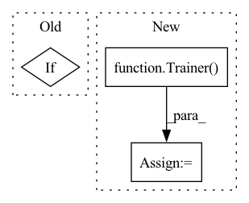

Pattern ID :14628
Before Change
for _ in tqdm(range(num_train_steps - model.steps), mininterval=10., desc=f"{name}<{data}>"):
retry_call(model.train, tries=3, exceptions=NanException)
if _ % 50 == 0:
model.print_log()
def main():After Change
)
if generate:
model = Trainer(**model_args)
model.load(load_from)
samples_name = timestamped_filename()
model.evaluate(samples_name, num_image_tiles)
print(f"sample images generated at {results_dir}/{name}/{samples_name}")In pattern: SUPERPATTERN
Frequency: 3
Non-data size: 3
Instances Fragment ID: 47986340
Project Name: lucidrains/stylegan2-pytorch
Commit Name: d0bab1360d59ed7a5930c4ba82f8781753ee0ccb
Time: 2020-09-23
Author: lucidrains@gmail.com
File Name: stylegan2_pytorch/cli.py
M Class Name: AnonimousClass
N Class Name: AnonimousClass
M Method Name: train_from_folder(32)
N Method Name: train_from_folder(32)
M Parent Class:
N Parent Class:
M File Name: stylegan2_pytorch/cli.py
N File Name: stylegan2_pytorch/cli.py
M Start Line: 49
M End Line: 103
N Start Line: 98
N End Line: 149
Before Change
batch_size (int): Batch size for torch.utils.data.DataLoader
if not isinstance(self.optimizer, optim.Optimizer):
self.optimizer = self.optimizer(self.parameters())
dataset = TensorDataset(x, y)After Change
dataset = TensorDataset(x, y)
loader = DataLoader(dataset, batch_size=batch_size, shuffle=True)
trainer = Trainer(max_epochs=max_epochs)
trainer.fit(self, loader)
def training_step(self, batch, batch_idx):
Trains model for one step. Fragment ID: 47986341
Project Name: rose-stl-lab/torchts
Commit Name: 4ffad7765c0fe2161c1ff7d46ac763ae44249b2d
Time: 2021-04-30
Author: lane.kevin.a@gmail.com
File Name: torchts/nn/model.py
M Class Name: TimeSeriesModel
N Class Name: TimeSeriesModel
M Method Name: fit(5)
N Method Name: fit(5)
M Parent Class: LightningModule
N Parent Class: ABC,nn.Module
M File Name: torchts/nn/model.py
N File Name: torchts/nn/model.py
M Start Line: 36
M End Line: 45
N Start Line: 36
N End Line: 37
Before Change
while lr > args.min_lr and epoch_itr.next_epoch_idx <= max_epoch:
// train for one epoch
valid_losses, should_stop = train(args, trainer, task, epoch_itr)
if should_stop:
break
// only use first validation loss to update the learning rateAfter Change
// Build trainer
if args.model_parallel_size == 1:
trainer = Trainer( args, task, model, criterion, quantizer)
else:
trainer = MegatronTrainer(args, task, model, criterion)
print("created trainer")
logger.info( Fragment ID: 47986338
Project Name: saareliad/ftpipe
Commit Name: d2676db510713ec01b1f0ec8f0ab136c84f34da7
Time: 2020-08-03
Author: alondede-jager@campus.technion.ac.il
File Name: megatron/megatron.py
M Class Name: AnonimousClass
N Class Name: AnonimousClass
M Method Name: main(1)
N Method Name: main(1)
M Parent Class:
N Parent Class:
M File Name: megatron/megatron.py
N File Name: megatron/megatron.py
M Start Line: 67
M End Line: 131
N Start Line: 61
N End Line: 132